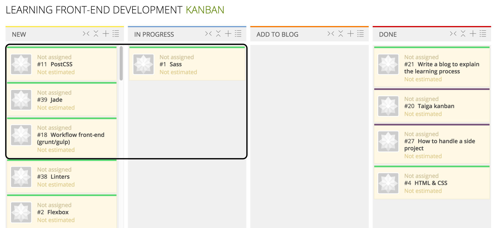

Learning Preprocessors, Postprocessors and automatic Workflow
After organizing the learning Front-end development project, I am going to start learning about Preprocessors (Sass for CSS and Jade or HAML for HTML), Postprocessors (PostCSS) and automatic workflow (with Gulp or Grunt):

After learning this block I will apply the new concepts creating a web design, uploading the code in GitHub and sharing the results in the blog.
Do you know free online resources for all of this? Right now I am focus on the Learn Sass course from Codecademy, but I will add all the resources in the Taiga Kanban and in the blog while I am learning.
Wish me luck :)
Written on June 19, 2016